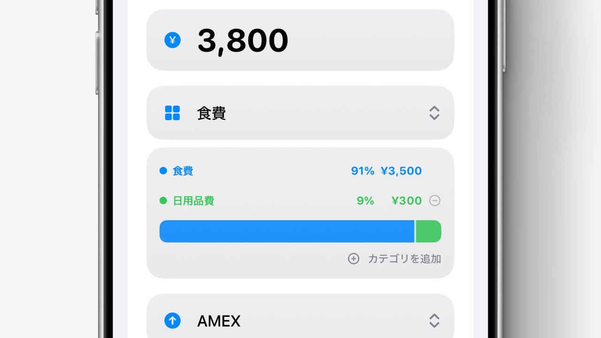

まとめ買いも、
かんたん内訳管理
スーパーやドラッグストアで、 食費や日用品をまとめて購入した時も、 Liltなら1回の記録を複数のカテゴリに分けて登録できます。 細かな内訳を計算しなくても、 バーを動かすだけで直感的に調整できます。

今回のコツ
- 1回の記録を、複数のカテゴリに分けて登録できます。
- バーを左右に動かすだけで、 カテゴリごとの割合を直感的に調整できます。
- 割合や金額をタップすると、 内訳を直接入力することもできます。
使い方
- 記録追加画面で、 カテゴリ選択欄の下にある 「カテゴリを分けて登録」をタップします。
- 2つ目のカテゴリを選択すると、 カテゴリごとの内訳を調整できるバーが表示されます。
- バーを左右に動かして割合を調整するほか、 割合や金額をタップして直接入力することもできます。
補足
複数カテゴリに分けて登録した記録は、 ダッシュボードにも内訳ごとの記録として反映されます。 食費と日用品などを分けて見たい時も、 家計の流れをより正確に把握できます。